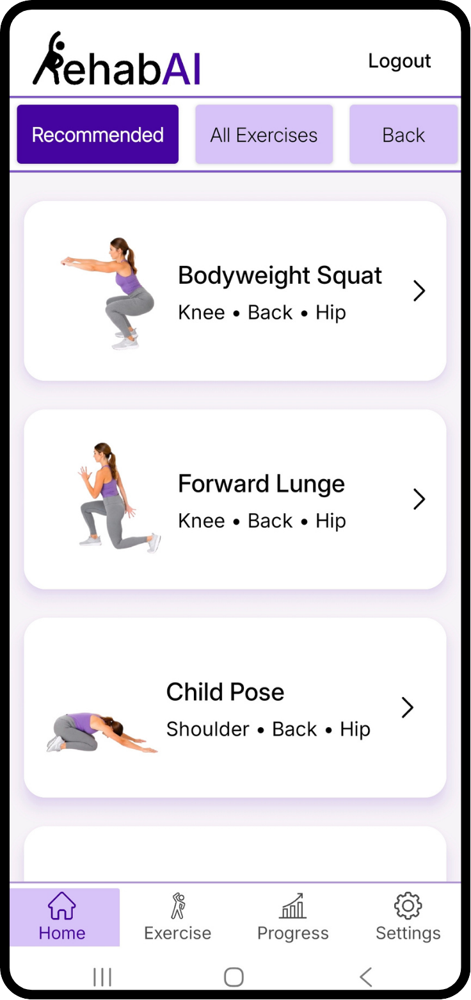
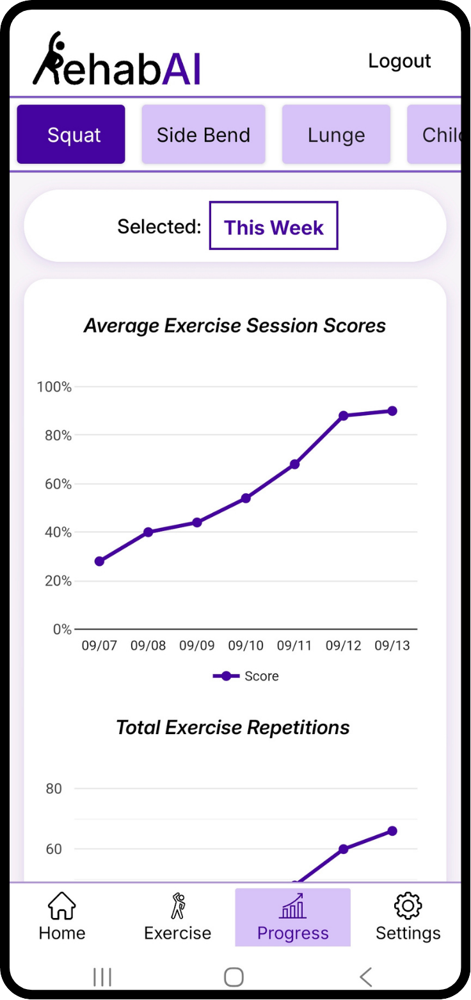

ABOUT THE APP
What is RehabAI? Core functionality explained
By Cody Li ·
RehabAI is an AI-powered telerehabilitation app designed to make guided exercise at home more engaging, measurable, and accessible.
Why we are building RehabAI
Many people want to continue rehabilitation exercises at home, but traditional in-person care can be expensive, time-consuming, or difficult to fit into everyday life. Exercising independently creates another challenge: a video can demonstrate a movement, but it cannot tell the viewer how closely their own movement matches it.
RehabAI is being built to help close that gap. It combines guided exercises with motion tracking, immediate feedback, and scoring so users can better understand their performance while exercising at home.
How RehabAI works
Users choose an exercise, review a visual example, and receive positioning guidance before beginning. The interface allows users to set an exercise duration and switch between available movements.
During the exercise, RehabAI is designed to track visible body movement through the device’s camera. On-screen body-position markers show how the movement is being interpreted, while a score and progress bar provide immediate, easy-to-understand feedback.

.png)
Core functionality
Real-time movement feedback
RehabAI gives users feedback while an exercise is in progress, rather than only showing a prerecorded demonstration.
Exercise scoring
A simple score helps users understand how well their movement matched the exercise target and gives them a clear goal for future sessions.
Exercise discovery
The exercise library organizes recommended movements and body-area categories so users can find an exercise and review what it targets before starting.

Objective progress tracking
Scores can provide a consistent way to review exercise performance over time. The Progress area displays average session scores and completed repetitions across a selected period.

Accessible exercise guidance
Visual examples, camera-position prompts, adjustable exercise length, and read-aloud instructions are designed to make sessions easier to set up and follow.
Who RehabAI is for
RehabAI is designed for people with minor injuries who want guided exercises at home, patients completing exercises prescribed by a healthcare professional, and active adults or athletes recovering from an injury. Early users may include people who already exercise independently with online rehabilitation videos but want interactive feedback and progress tracking.
A direct path to at-home exercise
RehabAI is intended to be available directly to users without requiring a clinic code or an upfront starting cost. The planned free version will include a limited selection of exercises, with a subscription option for access to the complete exercise library.
This approach is designed to let users experience the feedback system by completing an exercise before deciding whether the full service is right for them.
RehabAI and professional care
RehabAI is designed to support exercise at home, including the time between in-person appointments. It does not replace a physician, physical therapist, diagnosis, treatment plan, or individualized medical advice. Users should follow guidance from a qualified healthcare professional and confirm that an exercise is appropriate for their situation.
When was RehabAI first released?
RehabAI reached its first release on September 20, 2026. The team continues to improve reliability and the exercise experience through new updates. The website’s images demonstrate the interface and do not make a claim of clinical effectiveness.
Visit the RehabAI app page for the current preview, or read the privacy policy to learn how personal information is handled.